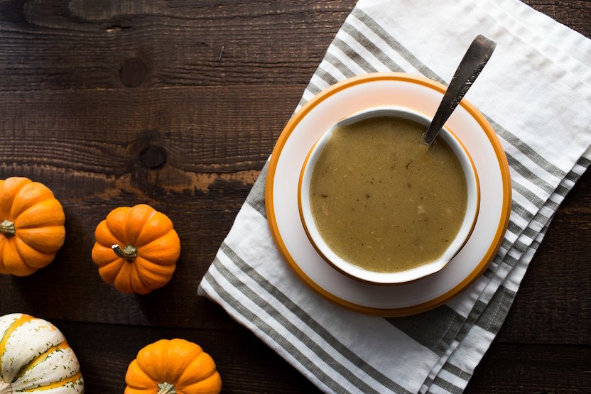
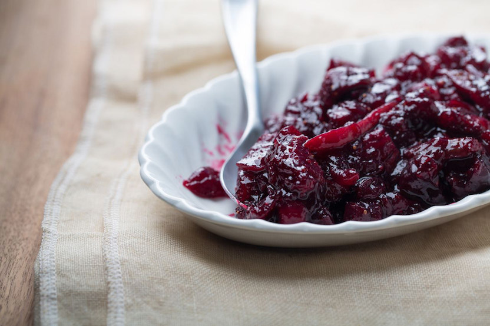
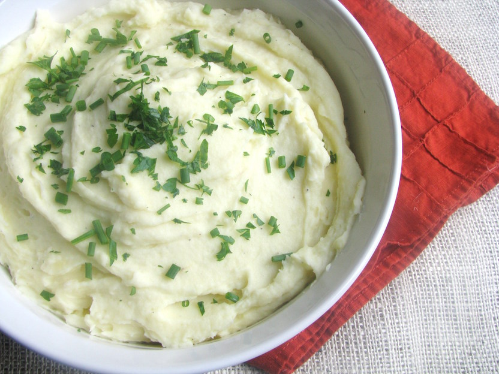
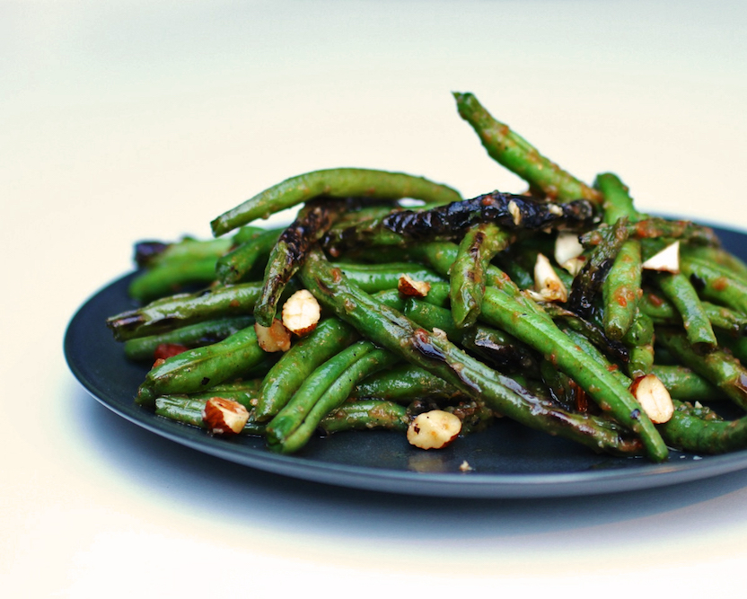
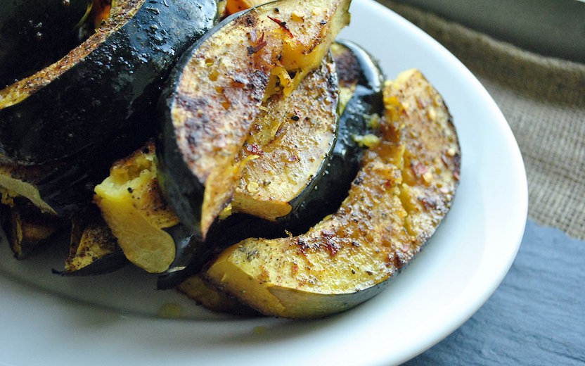

Thanksgiving Nonsense 2015
Because let's eat half your weight
Da Turkey
Cajun-Spiced Turkey
Sauces

Gravy

Cranberry Sauce
Sides

Mashed Potatoes
Veggie Stuffing

Charred Green Beans with Tarragon
(
vid
)

Spiced Winter Squash with Fennel
Dessert
Pear Tart With Goat Cheese, Rosemary, & Honey
Football
Eagles
12:30 PM
FOX
Lions
Panthers
4:30 PM
CBS
Cowboys
Bears
8:30 PM
NBC
Packer